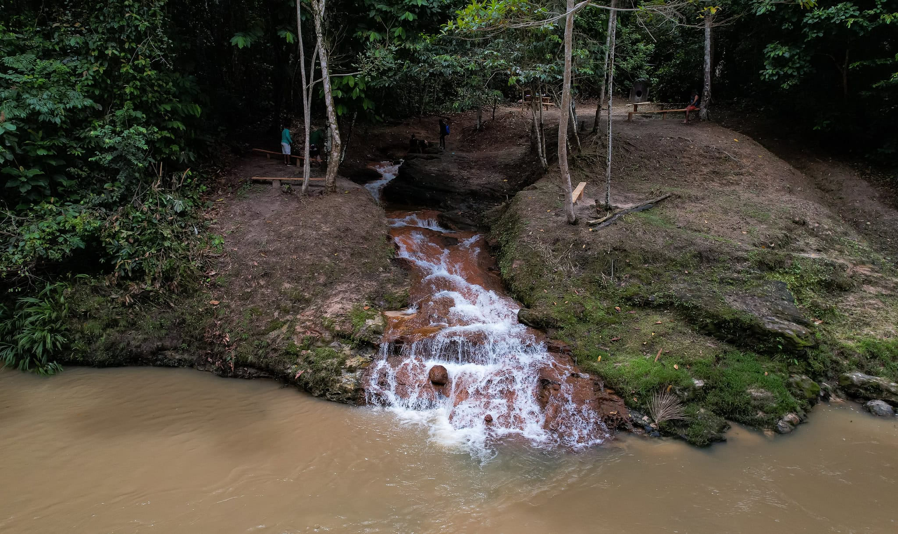
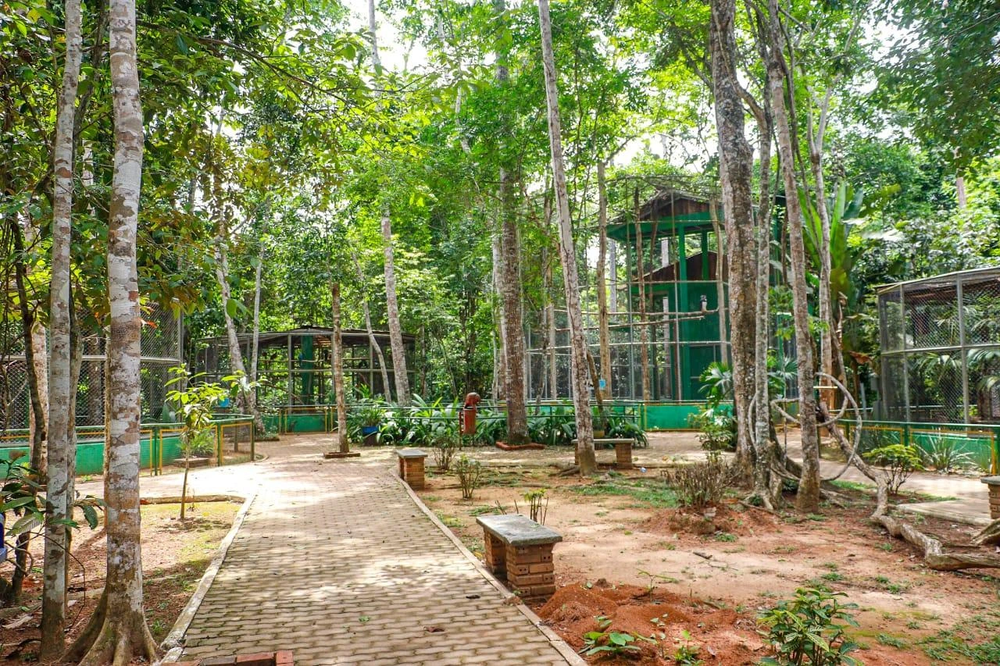
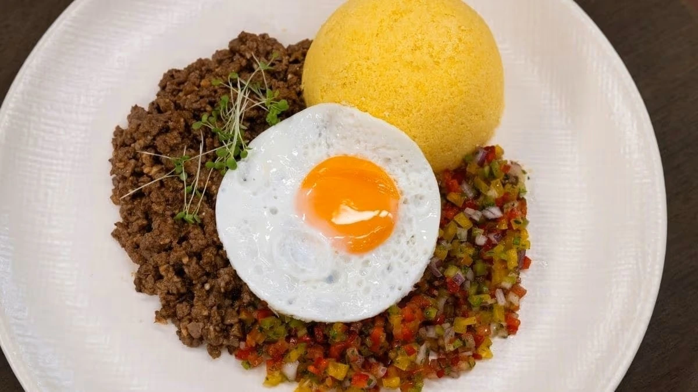
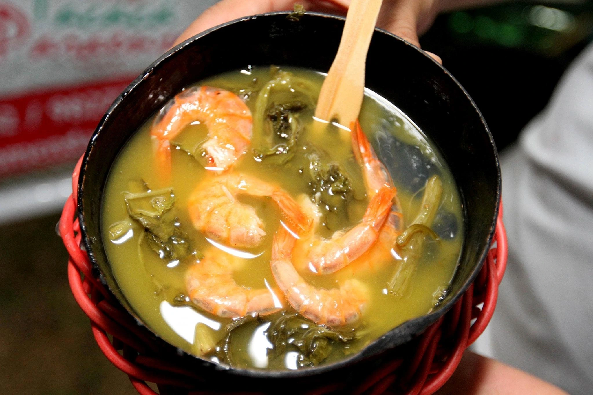
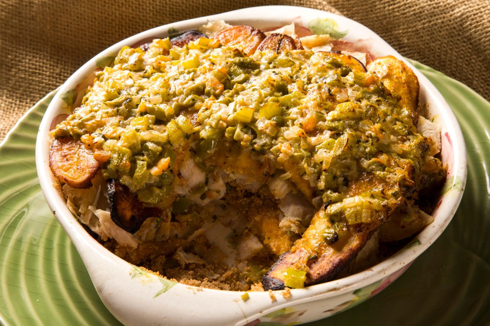

Capital
Rio Branco
Conheça destinos, culturas, sabores e paisagens de todas as regiões
brasileiras.
Destinos, culturas e paisagens
incríveis te esperam.
O Acre é um estado localizado no extremo oeste do Brasil, fazendo fronteira com a Bolívia e o Peru. Conhecido por sua vasta cobertura de Floresta Amazônica, o estado possui grande riqueza ambiental, cultural e histórica. Sua formação está diretamente ligada ao ciclo da borracha, atividade que desempenhou papel fundamental no desenvolvimento econômico da região. Atualmente, o Acre destaca-se pelo ecoturismo, pelas áreas de preservação ambiental e pela valorização das culturas indígenas e tradicionais da Amazônia.

Rio Branco
Aproximadamente 164.123 km²
Cerca de 900 mil habitantes
Norte

Considerado um dos locais de maior biodiversidade do Brasil, o Parque Nacional da Serra do Divisor oferece cachoeiras, montanhas, trilhas e paisagens exuberantes da Floresta Amazônica. É um dos principais destinos de ecoturismo do estado.

O Palácio Rio Branco é um dos principais patrimônios históricos do Acre. O local abriga exposições que contam a história do estado e do ciclo da borracha, além de possuir arquitetura marcante.

O Parque Chico Mendes é uma importante área de lazer e preservação ambiental. O parque homenageia o seringueiro e ambientalista Chico Mendes e permite aos visitantes conhecer espécies típicas da fauna amazônica.

Prato bastante popular no Acre, a baixaria é preparada com carne moída, farinha, tomate, cheiro-verde e ovo frito. É tradicionalmente consumida no café da manhã e representa bem a culinária regional.

Muito apreciado na região amazônica, o Tacacá é feito com tucupi, goma de mandioca, camarão seco e jambu, proporcionando um sabor marcante e característico.

Preparado com o peixe pirarucu, um dos maiores peixes de água doce do mundo, esse prato combina ingredientes regionais e é considerado uma das especialidades da gastronomia acreana.
O Acre possui clima equatorial, com temperaturas elevadas e alta umidade durante a maior parte do ano. É recomendável utilizar roupas leves, protetor solar e repelente.
O Acre possui clima equatorial, com temperaturas elevadas e alta umidade durante a maior parte do ano. É recomendável utilizar roupas leves, protetor solar e repelente.
A região do Vale do Juruá é uma excelente opção para quem deseja conhecer áreas preservadas da Amazônia e o Parque Nacional da Serra do Divisor. Já a capital Rio Branco oferece atrações históricas, culturais e gastronômicas.
A região do Vale do Juruá é uma excelente opção para quem deseja conhecer áreas preservadas da Amazônia e o Parque Nacional da Serra do Divisor. Já a capital Rio Branco oferece atrações históricas, culturais e gastronômicas.
Aproveite a viagem para experimentar pratos típicos preparados com ingredientes amazônicos, como tucupi, jambu, mandioca e peixes de água doce. A culinária acreana proporciona uma experiência autêntica dos sabores da floresta.
Aproveite a viagem para experimentar pratos típicos preparados com ingredientes amazônicos, como tucupi, jambu, mandioca e peixes de água doce. A culinária acreana proporciona uma experiência autêntica dos sabores da floresta.